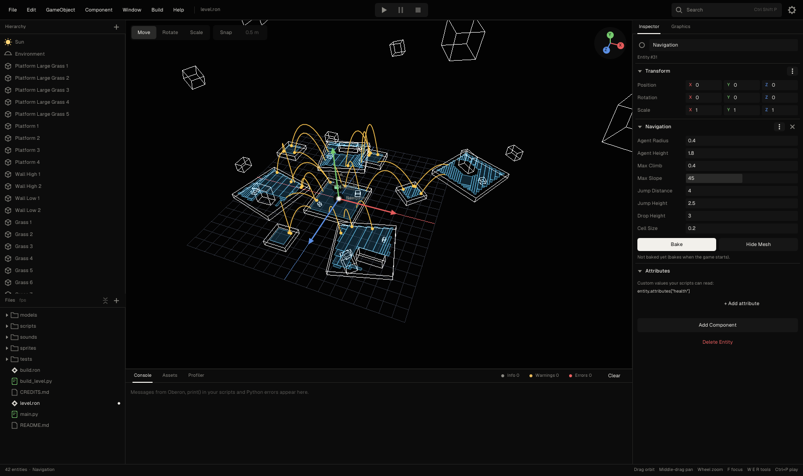

Navigation

Navigation lets characters and drones find their own way around a level: round walls, up ramps, and across gaps they can jump. It has three parts:
| What it does | Set up in | |
|---|---|---|
| The navigation mesh | Where agents can walk, worked out from the level's static colliders | A Navigation component on any entity (one per scene) |
| Nav Agents | Entities that walk the mesh by themselves: you give them a target, they find the way, steer round corners and each other, and take the jumps | A Nav Agent component, and scripts |
| Path queries | ctx.nav.path(a, b) and friends, for your own logic | Scripts |
The FPS example uses all three: once a drone sees you or hears a shot (AI), it chases you round the walls and down the platforms until you're in range.
The navigation mesh#
Add Component → Navigation to any entity (an empty one called "Navigation" is tidy). Its rows describe the agents that will walk the mesh:
| Row | What it does |
|---|---|
| Agent Radius | How far the mesh keeps from walls and edges (m). Use your widest agent |
| Agent Height | The headroom it needs (m): no walking under low ceilings |
| Max Climb | The highest step walked straight up (m). Kerbs and stairs below this are just floor |
| Max Slope | The steepest walkable ground (degrees) |
| Jump Distance | The widest gap jumped across (m); 0 turns automatic jumps off |
| Jump Height | The highest ledge jumped up to (m) |
| Drop Height | The deepest drop jumped down (m) |
| Cell Size | The detail (m). Smaller is more exact but slower to bake |
The mesh is built from every collider that doesn't move: colliders without a Rigid Body, and those on Fixed bodies. Dynamic crates, characters, sensors and Nav Agents are left out. Meshes, boxes, balls and capsules all count.
Bake and the overlay#
Press Bake in the Navigation component. Oberon works out the mesh
(usually well under a second), saves it next to the scene as
<scene>.nav.ron, and points the component's file at it. The Console
reports how much is walkable, in how many areas, with how many jumps.
The scene view then draws it over the level:
- Blue is where agents can walk.
- Orange arcs are jumps: across gaps, up onto ledges and down drops. A dot marks where each one lands.
Hide Mesh turns the overlay off; Show Mesh brings it back.
You don't have to bake: without a saved file, the mesh is baked when the game starts. Baking ahead makes the start quicker and lets you check the result. Bake again after moving the level about: Oberon warns in the Console at Play when the saved mesh doesn't match the level any more, and bakes a fresh one for that run.
How it works#
Baking follows the usual recipe: the colliders are cut into a grid of columns (voxelised), the tops of solid columns with enough headroom and gentle enough slopes become walkable cells, the cells are shrunk away from walls by the agent radius, joined into connected regions (tiny islands are dropped), and merged into rectangular polygons. Finally, each edge is checked for a landing spot within jump distance; clear ones become jump links.
Hand-placed links#
When the automatic jumps don't cover it (a ladder, a teleporter, a gap wider than the agents should normally jump), place a link by hand: put an entity where the link starts, add Component → Nav Link, and pick the entity where it ends in To. Both Ways lets agents use it back. Bake again to include it.
Nav Agents#
Add Component → Nav Agent to anything that should find its own way:
| Row | What it does |
|---|---|
| Speed | Top speed (m/s) |
| Acceleration | How quickly it speeds up, slows down and turns (m/s²) |
| Radius | How much room it takes up, for keeping clear of other agents (m) |
| Hover | How high it floats above the mesh (m): a drone at head height. Not shown on characters, which stand on the ground |
| Stop Distance | How close to the target counts as there (m) |
| Avoid Others | Steer clear of other agents (they step aside for each other) |
| Face Movement | Turn to face where it's going |
A Nav Agent on a character (an entity with a Character Controller) walks through its controller, so it falls, slides along walls and climbs steps like the player. Anything else glides Hover metres above the mesh. Jumps follow an arc either way.
Agents do nothing until a script sends them somewhere:
def update(entity, ctx):
entity.nav.go("Player") # follow the player, wherever they goentity.nav | |
|---|---|
go(target) | Head for a point (x, y, z), an entity, or an entity's name (followed as it moves). None stops. Calling it every frame with the same target is fine |
stop() | Slow to a halt |
target | Where it's heading, or None |
arrived | It's within stop_distance of the target (or going nowhere) |
moving, jumping | Whether it's on its way, and whether it's mid-jump |
velocity | Its velocity (m/s) |
path | The corners still ahead, ending at the target |
remaining_distance | How far it still has to go along the path (m) |
speed, stop_distance, hover | Read, or set to change |
entity.nav is None without a Nav Agent. Agents look for a new way about
three times a second, so a moving target is followed round corners.
The FPS drones bob by changing their hover height, and stop short at firing range:
# scripts/enemy.py
entity.nav.go(target)
entity.nav.hover = s["hover"] + bob(entity)Scripts can change stop_distance as they go: the drones only hold back
while they have a clear shot, and otherwise come round the wall.
Paths from scripts#
ctx.nav answers questions about the mesh, for logic of your own (patrol
routes, "can the guard get there?", a path drawn on the HUD):
ctx.nav | |
|---|---|
ready | True when the scene has a navigation mesh |
path(start, end, partial=False) | The shortest walkable way as a list of corner points, both ends included, or None when there's no way. With partial=True, an unreachable end gives the way to the closest reachable point |
path_length(start, end) | How far that walk is (m), or None |
nearest(point, max_distance=5.0) | The closest point on the mesh, or None |
reachable(start, end) | Whether there's a walkable way |
Points can be (x, y, z) tuples or entities. A point a little above the
mesh (a character's middle) snaps down onto it.
def update(entity, ctx):
way = ctx.nav.path(entity, "Exit")
if way is not None and len(way) > 1:
ctx.log(f"{len(way) - 1} legs, {ctx.nav.path_length(entity, 'Exit'):.1f} m")In Python#
The same components exist in Python, and scene files save them:
import automata as at
scene.add(at.Entity("Navigation").add(at.Navigation(agent_radius=0.4, jump_distance=4.0)))
guard = at.Entity("Guard").add(at.NavAgent(speed=3.0, stop_distance=1.5))See the API reference for every option.
Tips#
- One Navigation per scene. Its settings should fit your widest agent: a mesh baked for a 0.4 m radius lets a 1 m-wide agent scrape walls.
- Starting off the mesh is fine. An agent placed beside the mesh (a drone over an edge) moves freely back onto it.
- Agents don't push the player. Characters with Nav Agents collide with the world through their controller; the others glide, so give drones a collider for shots to hit.
- Big levels: a 0.2 m cell is plenty for people-sized agents. Raise Cell Size for huge outdoor levels if baking gets slow.